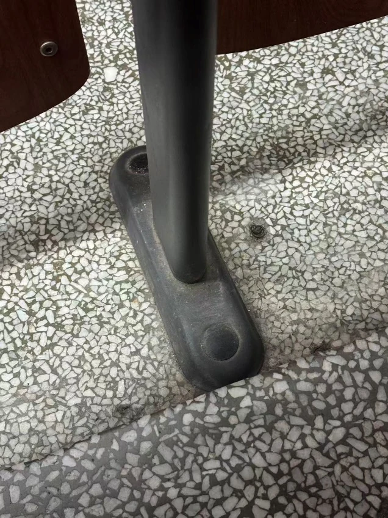
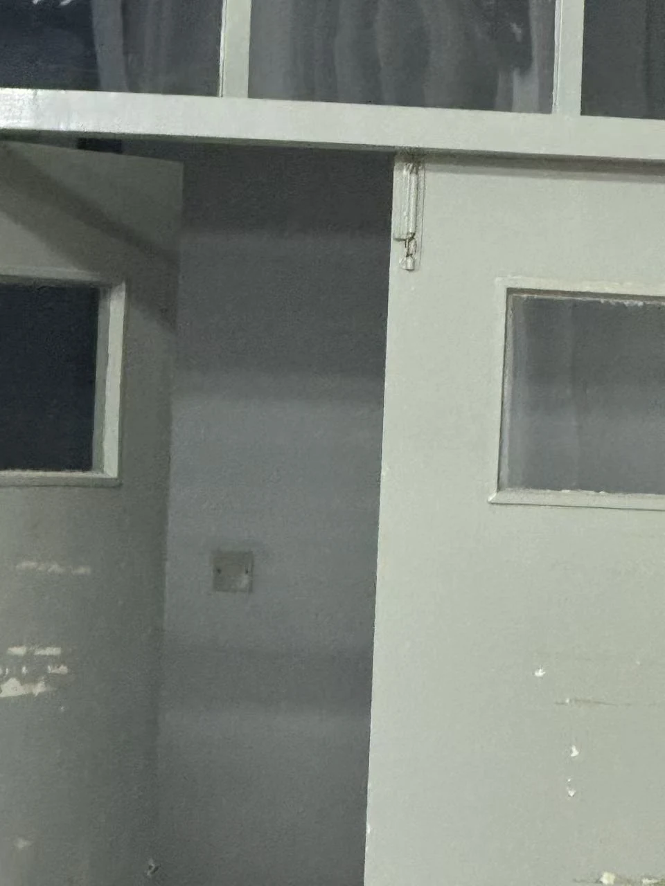
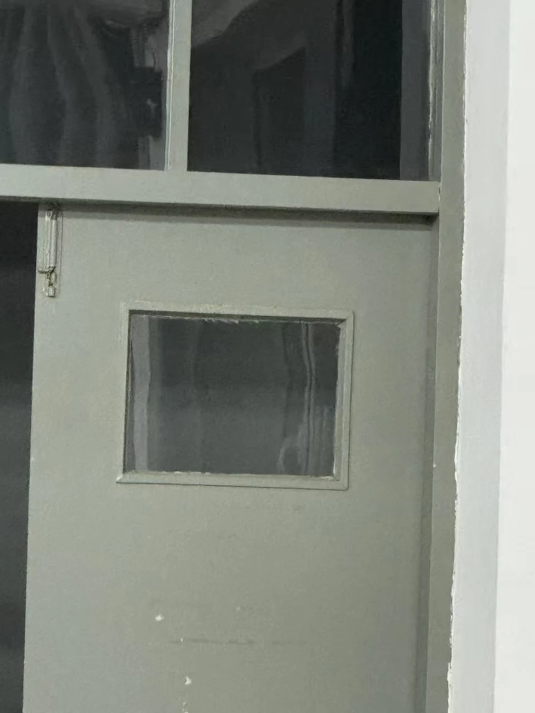
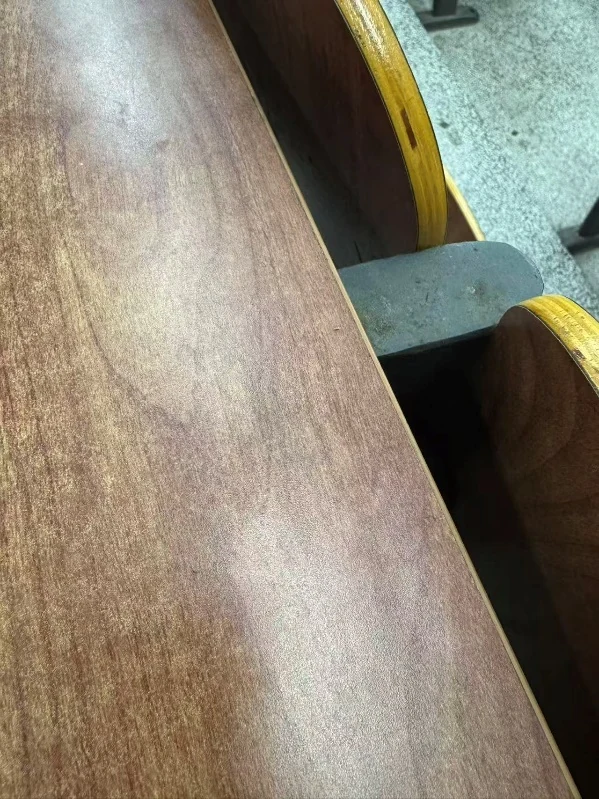

大连交通大学 · 智能建造23
我的原作案例一：教室课桌的力学设计（抗弯+抗压+抗剪+应力分散原理）
陈浩




核心构件
课桌桌面、桌腿、桌斗横梁、桌面与桌腿连接处的加固板
涉及原理
1. 材料力学：抗弯构件应变分布规律、构件抗压强度准则、抗剪承载力设计、应力集中缓解原理；
2. 结构设计原理：多点支撑荷载分散理念、薄弱部位加固设计、几何稳定结构构建原理。
现象与设计解释
日常使用中，课桌需承受书本堆叠的竖向压力、书写时的局部按压荷载，还需抵抗轻微碰撞产生的横向力，需避免桌面弯曲、桌腿变形、连接处断裂。
桌面设计：采用多层实木板或高密度纤维板，厚度通常≥2cm。根据材料力学抗弯构件应变分布原理，荷载作用下桌面上下边缘应变最大（拉/压应力最强）、中性轴处应变趋近于零，合理的厚度设计可保证截面惯性矩足够，既满足抗弯需求（避免桌面凹陷变形），又不浪费材料；部分桌面边缘做倒角处理，减少尖锐边缘的应力集中，同时提升使用安全性。
桌腿设计：多采用方形空心钢管或实心木柱，方形截面几何稳定性优于圆形，空心钢管在同等材料用量下，比实心结构抗压刚度更高，符合抗压构件“优化截面提升力学性能” 的设计原则，可有效承受桌面传递的竖向总荷载，防止桌腿受压弯曲或坍塌。
连接与加固：桌面与桌腿连接处加装金属/木质加固板（呈L型或三角形），三角形结构具备几何不变性，能将桌面的集中荷载分散到桌腿的多个受力点，缓解连接处的剪应力集中（避免螺丝松动、木板开裂）；桌斗横梁横向连接两侧桌腿，形成整体受力体系，增强课桌横向抗侧移能力，防止按压桌面时课桌左右晃动，契合结构设计“整体协同受力，提升结构稳定性”的核心理念。
案例二：教室门的力学设计（抗弯+抗扭+铰链受力优化+变形控制原理）
核心构件
门板、门框、铰链、门锁、门芯填充物
涉及原理
1. 材料力学：构件抗弯刚度设计、扭转变形控制原理、局部承压强度原理；
2. 结构设计原理：受力支点合理布置、荷载传递路径优化、构件协同工作设计理念。
现象与设计解释
教室门频繁开关时，需承受自身重量产生的竖向荷载、开关时的扭矩、碰撞时的冲击力，还需保证长期使用后不变形、不掉落、开关顺畅。
门板设计：多采用夹心结构（外层薄钢板/木板+内层蜂窝纸/泡沫填充物），而非实心板材。根据材料力学抗弯刚度原理，构件抗弯能力与截面惯性矩相关，夹心结构通过增大门板整体截面高度，同时利用外层板材承担拉压应力、内层填充物传递剪力，在减少材料用量、减轻门重的前提下，保证门板足够的抗弯刚度，避免门板下垂变形；蜂窝纸填充物呈六边形蜂窝状，六边形结构可均匀分散局部压力，提升门板抗冲击能力，符合“分散受力，优化材料利用率”的设计思路。
铰链设计：通常安装2-3个铰链，沿门的竖向均匀布置（间距约50-60cm）。根据结构设计多点支点荷载分散原理，多个铰链共同承担门板的全部重量，将集中在单个支点的竖向压力分散到多个支点，降低每个铰链的局部承压应力，避免铰链因受力过大变形或断裂；铰链轴选用高强度金属，增强抗剪能力，同时保证开关时的转动灵活性，减少扭矩产生的磨损，契合“合理布置支点，优化受力传递路径”的核心逻辑。
门框与门锁配合：门框采用实木或金属型材，与墙体牢固连接，形成稳定的受力支座，为门板提供可靠支撑；门锁安装在门的侧边中部（靠近拉手位置），开关门时，扭矩主要集中在拉手与铰链的连线方向，中部安装可缩短力臂，减少门板的扭转变形，同时门锁与门框的锁舌配合紧密，关闭时可限制门板横向位移，增强门的整体稳定性，防止风吹或碰撞导致门晃动，体现材料力学“控制力臂长度，减少构件变形”的设计原则。
这是一份便于网页阅读的原作视图，保留提交内容的文字、图片和基本顺序；公开页面不显示学号。